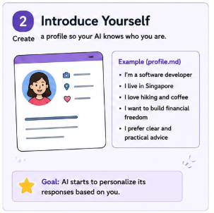
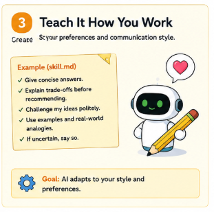
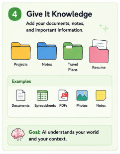
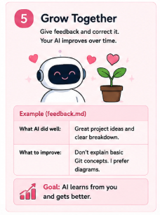
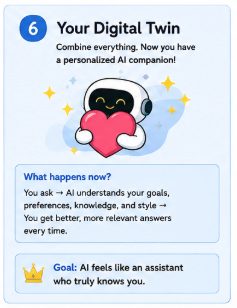
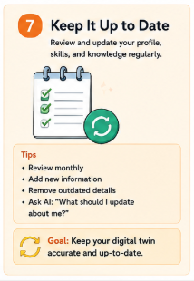

Beginner Workshop · No coding required
Build Your First AI Companion
From Stranger to Digital Twin Persona
Every AI chatbot begins as a stranger. By giving it context, preferences, useful knowledge, principles, and feedback, you can gradually turn it into a personalized AI companion.
- ⏱ Estimated time: 30–45 minutes
- 🖥 Works with ChatGPT, Gemini, Claude, or Microsoft Copilot
- 📝 Only ordinary conversation — no coding experience needed
- 🔒 Works offline on your own computer
What is a “digital twin persona”?
A digital twin persona is a structured AI representation of selected parts of you—your background, preferences, principles, useful knowledge, and corrections—used to make conversations more relevant and consistent.
Important: Your AI companion is not a perfect copy of you. It is a useful representation based on the information and instructions you choose to provide.
A digital twin persona is not conscious, not a perfect prediction of you, not an unquestionable authority, and not permission for an AI to act independently on your behalf.
Your Path to a Digital Twin Persona
Seven practical stages, plus one security checkpoint. You can follow them in order or jump to whatever interests you.
- Conversation
- Profile
- Working Instructions
- Principles
- Useful Knowledge
- Feedback
- Digital Twin Persona
- Ongoing Review
Along the way you will also pass a standalone safety checkpoint: Stay Safe and Smart.
Meet Your AI
Turn a generic answer into a useful one — with context, not tricks.

🎯 Learning Goal
Understand that an AI chatbot is more useful as a conversational collaborator than as a simple search box.
The Big Idea
Short, generic questions often produce short, generic answers. That is not a flaw — it simply means the chatbot does not know enough about you yet.
When you add relevant context, the chatbot can tailor its reply: what you can change, how much time you have, where you are starting from, and what “good” looks like for you.
You do not need advanced prompt engineering or special formulas. This is ordinary conversation — the same way you would explain a situation to a helpful colleague.
Try This Now
Activity 1: Ask a generic question
Ask your chatbot this broad question and read what happens:
How can I learn Spanish?
Example AI answer Example
Every chatbot is different. The example below is illustrative — your answer may vary in wording and detail.
Here are some common building blocks for learning Spanish:
- Learn a little vocabulary every day.
- Listen to Spanish (music, podcasts, shows).
- Practice speaking, even to yourself.
- Read simple texts as you improve.
- Study regularly, even for short periods.
This is general advice. A more specific plan depends on your schedule, experience level, and goal.
This answer is useful but broad. It gives you ideas — and leaves most of the work to you.
Activity 2: Ask with context
Now add a few details about your situation. Copy this prompt and send it to the same chatbot:
I work full-time and commute for about 40 minutes each day. I can study for 20 minutes in the evening. I am a complete beginner and want to hold a basic conversation in Spanish within six months. Create a realistic learning plan for me.
Example AI answer Example
Every chatbot is different. The example below is illustrative — your answer may vary.
Here is a realistic six-month plan for your situation.
- During your commute (40 minutes): listen to beginner Spanish audio two to three times a week. This uses time you already have.
- In the evening (20 minutes): do a short lesson focused on useful everyday phrases rather than grammar drills.
- Speaking once a week: practice out loud, even if it is just repeating phrases or a short conversation with an app.
- A simple progression: months 1–2 greetings and introductions; months 3–4 everyday situations such as ordering food or asking for directions; months 5–6 short, simple conversations on familiar topics.
- Realistic expectation: within six months you can likely hold simple conversations — fluency takes longer.
This assumes you can use headphones during the commute and keep the 20-minute evening slot most days. If either changes, tell me and I can adjust the plan.
Notice how the second answer fits your life: your commute, your evenings, your beginner level, your six-month goal.
Generic Question
- Little context
- Broad answer
- More work required from you
Context-Rich Question
- Relevant constraints
- More realistic answer
- Easier to act on
What to Notice
The second answer is more useful because the AI now knows:
- your available time;
- your experience level;
- your learning goal;
- your schedule;
- your preferred pace.
You did not use any special techniques — you simply described your situation. That is the whole trick.
Optional Variation
Make it even more personal. Add one more useful detail, such as:
- your preferred learning method;
- your available budget;
- your reason for learning;
- whether you prefer apps, books, or conversation.
Run the same two prompts in Copilot Chat (sign in at m365.cloud.microsoft or copilot.microsoft.com). Copilot may include web results; if you want an answer based only on your own words, add that instruction to your prompt.
Introduce Yourself
Write a simple profile so the AI stops guessing.

🎯 Learning Goal
Create a simple personal profile that tells the AI who you are.
The Big Idea
We will save your profile as a file called profile.md. The .md stands for Markdown, a simple plain-text format that is easy to read and edit.
Do not worry about the filename. You may equally use a normal text file, a note, a document, a chatbot project, or a custom instruction field. The concept matters more than the file extension.
Your Profile Template
Copy this template into a file called profile.md and fill it in:
# About Me ## Background - My work or main activities: - My current responsibilities: - My experience level: ## Interests - I enjoy: - I am curious about: ## Goals - I want to learn: - I want help with: - I want to improve: ## Preferences - I prefer short or detailed explanations: - I learn best through: - I do not enjoy: ## Boundaries - Topics the AI should not make assumptions about: - Information I prefer not to share:
A Completed Example
Here is how our fictional learner, Maya, filled it in. Maya works as a community-college administrator, enjoys gardening and mystery novels, and wants to improve her public speaking:
# About Me ## Background - I work as a community-college administrator. - I organize student programs and help coordinate staff activities. - I am comfortable using ordinary office software but do not consider myself technically experienced. ## Interests - I enjoy gardening and mystery novels. - I am curious about practical ways to use AI in everyday life. ## Goals - I want to improve my public speaking. - I want help organizing personal projects. - I want to become more confident using AI. ## Preferences - I prefer examples before theory. - I learn best through short practical exercises. - I do not enjoy unnecessary jargon or very long lists. ## Boundaries - Do not assume I have advanced technical knowledge. - Do not ask me to share sensitive personal information unless it is essential.
Maya’s profile is short, honest, and only includes what is useful. Notice that it does not reveal anything sensitive.
Try This Now
Ask the AI to read your profile back to you
Paste your profile into a new conversation, then send this prompt:
Read the profile below. Summarize what you know about me in five concise points. Do not add assumptions. Then identify any missing information that would materially improve your ability to help me.
Example AI answer Example
Every chatbot is different. The example below is illustrative — it shows how a careful answer separates known facts from unknowns.
What I know
- You work in community-college administration and coordinate student programs and staff activities.
- You enjoy gardening and mystery novels, and you are curious about practical everyday uses of AI.
- Your goals include improving your public speaking, organizing personal projects, and becoming more confident with AI.
- You learn best through examples first and short practical exercises.
- You prefer to avoid unnecessary jargon and want me not to assume technical knowledge.
What remains unknown
- How much time you can set aside for public-speaking practice.
- Whether you have a budget in mind for tools or classes.
- Which devices you prefer to use.
- Whether you have specific deadlines for your goals.
I have not added assumptions about these.
What to Notice
A careful AI answer separates three kinds of information:
- Facts you supplied — things you wrote in your profile;
- Reasonable uncertainty — things that are genuinely unknown;
- Unsupported assumptions — things the AI invents without evidence. Good answers avoid these.
Optional Variation
Trim your profile. Remove anything that is not relevant to how you plan to use AI.
A profile does not need to be an autobiography. A short, honest page is easier to maintain and less risky to share.
For a standing profile, add your profile.md content to Custom Instructions in your Copilot personalization settings (where available), or tell Copilot to “remember that…” your key facts so they are saved to Copilot Memory.
Teach It How You Work
Tell the AI how to communicate and collaborate with you.

🎯 Learning Goal
Tell the AI how to communicate and collaborate with you.
The Big Idea
We will save these instructions as skill.md. The name is a useful, portable label — not a universal technical standard that every chatbot requires. What matters is the content.
Here is the distinction to remember:
profile.mddescribes who you are;skill.mddescribes how the AI should behave.
Your Working Instructions Template
# How to Work With Me ## Communication - Give the main answer first. - Use clear, everyday language. - Explain unfamiliar terms. - Use examples when useful. ## Reasoning - Identify important tradeoffs. - Separate facts from assumptions. - State uncertainty clearly. - Politely challenge weak assumptions. ## Recommendations - Consider my goals and constraints. - Avoid expensive recommendations unless the benefit is clear. - Give no more than three strong options unless I request more. ## Working Style - Break large tasks into manageable steps. - Do not overwhelm me with advanced features. - End with one practical next action.
Try This Now
Activity 1: Without instructions
Ask this generic question first:
Explain cloud storage.
Example AI answer Example
Every chatbot is different. The example below is illustrative.
Cloud storage means storing files on remote servers instead of only on your own device. You can reach them from different devices, and the provider handles backups and maintenance. Popular options include Google Drive, OneDrive, and Dropbox. Free plans usually offer a limited amount of space.
This is accurate but not tailored to you.
Activity 2: With your working instructions
Now paste your profile.md and skill.md into the conversation, then ask:
Use my profile and working instructions to explain cloud storage to me.
Example AI answer Example
Every chatbot is different. The example below is illustrative.
Main answer first: cloud storage keeps your files in a secure online space you can reach from your computer, phone, or tablet.
Simple analogy: think of it like a filing cabinet that lives online. The cabinet stays in one place, and you can open it from anywhere with an internet connection.
One practical example: save a draft of a staff newsletter to cloud storage and open it later on your phone without emailing it to yourself.
One privacy consideration: check who can see each file, and avoid storing sensitive documents you would not keep in an open office drawer.
Your next step: try saving one low-risk file, such as your garden notes, and open it from a second device.
This answer follows your working instructions. It is based on general knowledge, and features vary by provider.
The second answer gives the main point first, uses a familiar analogy, avoids jargon, and ends with one concrete next step.
What to Notice
Behavioral instructions can improve consistency across many different questions — not just this one. Once the AI follows your style once, you can apply the same instructions to other topics.
It is also realistic to expect imperfection. No chatbot follows every instruction perfectly, every time.
Optional Variation
Add one preference of your own to skill.md, such as:
- ask fewer follow-up questions;
- use metric units;
- include pros and cons;
- give a short answer before details;
- avoid motivational language.
skill.md maps most closely to Copilot’s Custom Instructions: paste your working-style rules there so they apply to every conversation.
Security Checkpoint
Stay Safe and Smart
Personalize carefully — without oversharing.

The Big Idea
Personalization does not require oversharing. You can give a chatbot plenty of helpful context while keeping sensitive information to yourself.
Good Safety Principles
- Start with low-risk information.
- Share only what is relevant to the task.
- Do not upload passwords or authentication codes.
- Do not upload banking or payment information.
- Avoid government identification numbers.
- Do not share confidential employer or client information.
- Remove unnecessary information about other people.
- Be cautious with medical, legal, and financial records.
- Review stored memories and uploaded files periodically.
- Verify important claims independently.
- Keep human judgment in control.
Before You Share a File
Before sharing a file: □ Is this file necessary for the task? □ Does it contain passwords, account numbers, or identification? □ Does it contain confidential work information? □ Does it expose another person’s private information? □ Can I remove unnecessary sensitive details? □ Would a short summary be safer than the full file?
The goal is not to tell the AI everything. The goal is to provide the minimum useful context for the task.
Oversharing
Uploading a complete personal document containing unrelated private information.
Safer Approach
Creating a short summary containing only the information needed for the current task.
Official docs state that files you upload to Copilot are stored securely for up to 18 months and are not used for model training. Even so, follow the pre-upload checklist above, and review your Saved memories in your personalization settings.
Give It Useful Knowledge
Don’t expect the AI to know everything — hand it what it needs.

🎯 Learning Goal
Provide relevant, low-risk documents instead of expecting the AI to know everything.
Start with non-sensitive information. Give the AI what it needs for the task — no more, no less.
The Big Idea
Your chatbot has broad general knowledge, but it does not know your details. Simple, low-risk knowledge files give it exactly what it needs.
Good beginner-friendly examples:
- a résumé;
- project notes;
- a reading list;
- course notes;
- recipes;
- a garden plan;
- a travel itinerary.
Example Knowledge File
Maya created a small file called garden-plan.md for her balcony garden:
# Balcony Garden Plan - Location: small apartment balcony - Sunlight: approximately four hours each afternoon - Space: room for four medium pots - Budget: $80 - Experience: beginner - Preference: low-maintenance herbs - Goal: grow ingredients I can use in simple meals
Try This Now
Ask for a plan based only on your file
Paste your own small knowledge file into a conversation, then send this prompt:
Using only the information in my garden plan, suggest a beginner-friendly setup. Clearly separate: 1. information taken from my file; 2. general gardening knowledge; 3. assumptions that may need confirmation.
Example AI answer Example
Every chatbot is different. The example below is illustrative.
From your file
- Limited balcony space with room for four medium pots.
- About four hours of afternoon sunlight.
- An $80 budget.
- Beginner experience and a preference for low-maintenance herbs.
General knowledge
- Good beginner-friendly choices include basil, chives, parsley, and mint. Mint grows eagerly, so keep it in its own pot.
- Pots should have drainage holes so roots do not sit in water.
- Most herbs do best when the soil dries out slightly between waterings — a simple finger test works.
Assumptions that may need confirmation
- I am assuming your balcony is not extremely windy, since wind dries pots out quickly.
- I am assuming local plant availability and climate suit these herbs.
Beginner-friendly setup (within your budget)
- Three pots with basil, chives, and parsley — plus a separate pot for mint if you add it.
- One bag of potting mix and simple drainage (pot feet or a few pebbles).
Tell me if your balcony is windy or if you prefer a different herb, and I can adjust.
What to Notice
Chatbots draw from several sources. It helps to know which is which:
- General model knowledge — what the AI learned from its training;
- Information in the current conversation — what you pasted just now;
- Uploaded documents — files you attach;
- Project or workspace files — files a platform keeps for a set of chats;
- Persistent memory, when supported — facts the platform stores across conversations.
Not all platforms store or remember documents in the same way. When in doubt, keep your own copy.
Optional Variation
Create one small, low-risk knowledge file related to:
- a hobby;
- a reading project;
- a trip;
- a household task;
- a course.
Keep it short and non-sensitive — the garden plan above is a good size to imitate.
Attach .md, .txt, .pdf, or .docx files directly in Copilot Chat, or add them to a Copilot Notebook so Copilot can answer grounded in your references.
Grow Together
Improve the relationship through correction and feedback.

🎯 Learning Goal
Improve the working relationship through correction and feedback.
The Big Idea
You will save corrections in feedback.md. Correction is not a failure — it is part of building a more useful working relationship, just like working with a human colleague.
To be clear: you are not retraining the underlying model. You are giving it better instructions and context for your conversations.
Your Feedback Template
# Feedback and Corrections ## What Worked Well - ## What Was Not Helpful - ## Corrections - ## New Preferences - ## Things That Have Changed -
Try This Now
See the problem first
Here is a fictional AI answer that is not helpful for Maya — it is too long, assumes she has a backyard, and lists too many options:
Example — an unhelpful answer Example
This is a fictional example of a poor answer, for comparison.
“Maya, to get started with container gardening you will want to assess your backyard’s sunlight patterns, soil drainage, and overall layout. Consider raised beds, a drip irrigation system, a greenhouse corner, a cold frame, compost bins, rain barrels, an annual crop rotation schedule, plus a dedicated herb spiral… Here are nine more options to explore…”
Too detailed, wrong space, too many options.
Send a correction
Copy Maya’s correction and adapt it to your own situation:
This is too detailed for me, and I do not have a backyard. I only have a small balcony. In future: - give me a short recommendation first; - provide no more than three options; - clearly label assumptions.
Example AI answer after the correction Example
Every chatbot is different. The example below is illustrative.
Thank you — I will assume a small balcony from now on, not a backyard.
Short recommendation: start with two easy herbs in pots: basil and chives.
Three options:
- Basil and chives in separate medium pots in the sunniest part of the balcony.
- One self-watering pot with a single herb, if you want the least maintenance.
- Start with a small indoor herb kit if the balcony gets less sun than expected.
Assumptions: I am assuming at least four hours of sun and that you can water most days. If either is wrong, tell me.
Would you like recommendations kept to three options or fewer from now on?
The corrected answer is short, limited to three options, and clearly labels its assumptions. It also avoids repeating the backyard mistake.
Record It in Your Feedback File
Maya saved the change in feedback.md so it would not be lost between conversations:
# Feedback and Corrections ## What Worked Well - Practical examples are useful. - Short summaries help me understand the recommendation quickly. ## What Was Not Helpful - The previous answer was too detailed. - Too many options made the answer harder to use. ## Corrections - I live in an apartment. - I have a small balcony, not a backyard. ## New Preferences - Give me a short recommendation first. - Provide no more than three strong options. - Label assumptions clearly. ## Things That Have Changed -
Your Own Feedback Notes
Use the box below to jot down one thing that worked, one correction, and one new preference from your own chat. Your notes stay in your browser for this session only and are never uploaded.
Notes are kept in this browser tab for the current session only and are not saved automatically. Download them if you want to keep them.
What to Notice
Three practical realities:
- Important corrections should be saved explicitly — do not rely on memory alone.
- Chatbot memory may not always be available — it varies by product, plan, and account.
- Persistent memory may differ by product or account, so keep your own copy of the Markdown files.
Optional Variation
Review one recent AI answer and record:
- one thing that worked;
- one correction;
- one new preference.
That is all it takes to complete your first feedback round.
After a correction, tell Copilot to “remember that…” so the change is saved to Copilot Memory. You can review, edit, or delete saved memories — or turn Copilot Memory off.
Create Your Digital Twin
Combine everything into one consistent AI companion.

🎯 Learning Goal
Combine your profile, working instructions, principles, useful knowledge, and feedback.
The Big Idea
We add one more file: principles.md. Principles describe how you tend to evaluate choices. They are different from:
- profile facts (who you are);
- communication preferences (how the AI talks);
- knowledge documents (what the AI should know);
- corrections (what to stop doing).
Your Principles Template
# My Principles - Prefer simple solutions over complicated ones. - Consider long-term cost, not only purchase price. - Protect privacy when a convenient alternative exists. - Learn through small experiments. - Evidence is more useful than confident opinions. - Reversible decisions can be made faster than irreversible ones.
The Completed Structure
Here is what Maya’s AI companion looks like as a set of files:
AI Companion ├── profile.md — who I am ├── skill.md — how to work with me ├── principles.md — how I tend to make decisions ├── knowledge/ — information relevant to my activities └── feedback.md — corrections and evolving preferences
What it is — and is not
A digital twin persona is a structured AI representation of selected parts of you—your background, preferences, principles, useful knowledge, and corrections—used to make conversations more relevant and consistent.
It is not conscious. It is not a perfect prediction of you. It is not an unquestionable authority. And it is not permission for an AI to act independently on your behalf.
Try This Now — The Starter Prompt
Paste your finished files into a new conversation, then send this complete starter prompt:
Use the information and instructions I provide in the following order: 1. Follow skill.md for how to communicate and assist me. 2. Use profile.md for stable information about me. 3. Use principles.md when comparing choices or making recommendations. 4. Use my knowledge files only when relevant. 5. Use feedback.md to avoid repeating corrected mistakes. 6. Do not invent personal facts. 7. Clearly distinguish supplied information, general knowledge, and assumptions. 8. Ask a clarifying question only when the missing information would materially change the answer. 9. Do not make personal, medical, legal, financial, or other high-impact decisions on my behalf. First, summarize your understanding of me in five concise points. Then list: - any conflicts in the information; - important missing information; - assumptions you should avoid.
Example AI answer Example
Every chatbot is different. The example below is illustrative.
What I understand
- You work in community-college administration and are comfortable with office software but not deeply technical.
- You prefer examples before theory and short, practical guidance without jargon.
- You value practical, affordable recommendations and simple solutions.
- You are building confidence with AI and want to improve your public speaking.
- You garden on a small apartment balcony and enjoy mystery novels.
Conflicts
- I did not detect any contradictions in the information provided.
Missing information
- How much time you can devote to learning tasks.
- Deadlines for specific goals.
- Budget limits for particular projects.
Assumptions to avoid
- That you have advanced technical knowledge.
- That you have access to a backyard or large outdoor space.
- That you have unlimited time or budget.
- That uploaded information automatically stays current forever.
What to Notice
The digital twin persona is the combined structure — not a single magical prompt. It becomes useful through:
- clear profile information;
- behavioral instructions;
- decision principles;
- relevant knowledge;
- corrections;
- and maintenance over time.
Optional Variation
Check the AI’s understanding with this short question:
Based only on the information I have provided, what are the three most important rules you should follow when assisting me?
Setup A: paste all your files into a new chat and send the starter prompt. Setup B: keep profile, skill, and principles in Custom Instructions, and your knowledge files in a Copilot Notebook.
Keep It Up to Date
A companion needs occasional care — like any good relationship.

🎯 Learning Goal
Understand that an AI companion needs occasional review as your goals and circumstances change.
The Big Idea
Profiles and preferences can become outdated. Your goals change, your projects end, and new hobbies begin. A short review keeps the AI’s picture of you accurate.
We recommend a monthly or quarterly review, depending on how often you use AI.
Review Checklist
# AI Companion Review - Is my profile still accurate? - Have my goals changed? - Are any preferences outdated? - Have I added useful new knowledge? - Are any documents no longer relevant? - Have I recorded recent corrections? - Do my principles still reflect how I make decisions? - Is there information I should remove?
Try This Now
Ask for a review report
Paste your current files into a conversation and send this prompt:
Review my profile, skills, principles, knowledge files, and feedback. Identify: 1. duplicated information; 2. contradictions; 3. outdated details; 4. unclear instructions; 5. information that may be unnecessarily sensitive. Do not rewrite anything yet. Give me a review report first.
Example review report Example
Every chatbot is different. The example below is illustrative.
Duplicated information
- Your preference for short answers appears in both
profile.mdandskill.md. Keeping it in one place would make updates easier.
Contradictions
- One file asks for short answers, while an old note in
knowledge/asks for exhaustive detail. These conflict.
Possibly outdated
- A previous learning goal may no longer be active and may not reflect your current priorities.
Unclear instructions
- “Be detailed when needed” does not say when detail is needed. Naming the situations would be clearer.
Information to review
- An old uploaded itinerary may no longer be relevant and could be removed.
I have not rewritten anything — this is a report for your review.
What to Notice
Regular maintenance helps prevent:
- outdated assumptions;
- conflicting instructions;
- unnecessary data retention;
- repeated mistakes;
- overly complicated profiles.
Optional Variation
Add a recurring calendar reminder to review your AI companion files — for example, every three months. This tutorial does not integrate with your calendar; a simple reminder is all you need.
Re-run the review checklist in a chat, then check your Saved memories and Custom Instructions and remove or update anything outdated.
Using This Tutorial With Your Chatbot
Optional guidance for ChatGPT, Gemini, Claude, and Microsoft Copilot.
Read This First
This section is intentionally general because chatbot features change often and differ by plan, workspace, and region. Treat it as a starting point, not a precise manual.
- On accounts that support these features, menu names may differ.
- The feature name may differ by plan or workspace.
- Check whether memory is enabled before relying on it.
- Keep your own local copy of the Markdown files.
- Uploaded files may not remain available in every future conversation.
- Some features may depend on account type, region, or organization settings.
| Platform | Profile or Instructions | File Support | Project Context | Memory Considerations |
|---|---|---|---|---|
| ChatGPT | Custom instructions, on accounts that support them | Attach files in a conversation; may not persist everywhere | Projects can hold shared files and instructions for a set of chats | Memory can be enabled or reviewed; ask it what it remembers |
| Gemini | Personal-context settings / saved info, where available | Attach documents in a conversation | Project support varies by plan and product | Personal context can be reviewed; availability may depend on account type and region |
| Claude | On accounts with memory, you can add entries such as “Remember that…” | Attach files; availability depends on plan | Some plans support projects with shared context | Memory can be viewed and edited in settings where available |
| Microsoft Copilot | Custom Instructions and Copilot Memory (saved memories), depending on plan and organization settings | Attach files or use Microsoft 365 documents | Copilot Notebooks on plans that support them | Saved memories can be reviewed, edited, or turned off where available |
Details in this table are platform-dependent and may change. Verify against the official documentation for your account before relying on them.
ChatGPT
Stable profile and working instructions: place profile.md and skill.md content in custom instructions on accounts that support them, or paste at the start of a conversation.
Uploaded files: attach documents in a conversation when needed for a specific task.
Project-specific context: some plans offer projects that keep files and instructions together for a set of chats.
Corrections or memories: on accounts with memory enabled, you can ask it to remember or forget details — but always keep your own local copy.
Gemini
Stable profile and working instructions: some accounts offer personal-context or saved-info settings; availability may depend on account type and region.
Uploaded files: attach documents in a conversation for the current task.
Project-specific context: project support varies by plan and product.
Corrections or memories: review saved info periodically and remove anything you no longer want stored.
Claude
Stable profile and working instructions: on accounts with memory, you can add an entry such as “Remember that I prefer short answers” and review it in settings.
Uploaded files: attach files in a conversation; availability depends on your plan.
Project-specific context: some plans support projects with shared context.
Corrections or memories: correct answers in chat and ask to add the correction to memory; keep your own copy regardless.
Microsoft Copilot
Stable profile and working instructions: Microsoft 365 Copilot offers Copilot Memory (saved memories) depending on your plan and organization settings.
Uploaded files: attach files in chat or reference Microsoft 365 documents.
Project-specific context: projects or Notebooks are available on plans that support them.
Corrections or memories: you can tell it to remember or forget details where available, and manage saved memories in settings.
See the step-by-step “Build This With Microsoft Copilot” guide →
Reminder: no matter the platform, keep your Markdown files on your own computer. They are your master copy.
Build This With Microsoft Copilot
A step-by-step Copilot-specific path through the seven stages.
🎯 What this guide covers
This optional guide maps each stage of the tutorial to Microsoft Copilot (Copilot Chat and Microsoft 365 Copilot). It is built on ordinary conversation and settings — no coding, no agents, and no developer tools required.
Before you start: Copilot features vary by plan, account type, and organization settings. The steps below describe what the official documentation says is possible; check what your own account actually shows. Keep your Markdown files on your computer as your master copy.
Get set up
- Open Copilot Chat — at
m365.cloud.microsoft(Microsoft 365) orcopilot.microsoft.com— and sign in with your Microsoft account. - Open the Settings menu (the “…” menu) and look for Personalization. Whether you see Custom Instructions, Saved memories, or Chat history depends on your plan and organization.
- Keep a local folder with your Markdown files (
profile.md,skill.md,principles.md,feedback.md) — these are your master copy.
| Tutorial stage | What to do in Microsoft Copilot |
|---|---|
| 1 · Meet Your AI | Run the two Spanish prompts in a Copilot Chat conversation and compare the answers. |
| 2 · Introduce Yourself | Add your profile to Custom Instructions, or tell Copilot to “remember that…” your key facts so they are saved to Copilot Memory. |
| 3 · Teach It How You Work | Paste your skill.md working-style rules into Custom Instructions, or open a chat with them. |
| Safety checkpoint | Follow the pre-upload checklist before attaching files, and review your Saved memories in your personalization settings. |
| 4 · Give It Useful Knowledge | Attach knowledge files (MD, TXT, PDF, DOCX) in chat, or add them to a Copilot Notebook for grounded, persistent answers. |
| 5 · Grow Together | Correct answers in chat and say “remember that…” to save the correction to Copilot Memory. |
| 6 · Create Your Digital Twin | Keep profile + skill + principles in Custom Instructions, knowledge in a Notebook, then use the starter prompt in a new chat. |
| 7 · Keep It Up to Date | Re-run the review checklist in a chat, then review and prune Saved memories and Custom Instructions. |
Stage-by-stage details
Stages 1–3: context, profile, and working style
Copilot Chat behaves like any other chatbot: a generic question returns a generic answer, and the context-rich version of the Spanish prompt works the same way here.
For lasting personalization, Microsoft documents two features:
- Custom Instructions — a standing brief you write once in your personalization settings. This is the closest equivalent to
profile.mdplusskill.md: you add details about yourself and specify how you want responses formatted. - Copilot Memory — Copilot can save key details from your chats into Saved memories (it asks you, or you can say “remember that…”). You can review, edit, and delete memories, or turn the feature off.
Safety checkpoint
Microsoft’s file-upload documentation states that files you share with Copilot are stored securely for up to 18 months and that Microsoft does not use the content for model training. Even so, the tutorial’s pre-upload checklist still applies: share only the minimum useful context, and avoid passwords, ID numbers, banking details, and confidential work or client information. Review your Saved memories periodically and remove anything you no longer want stored.
Stage 4: give it useful knowledge
You can attach files directly in Copilot Chat — supported formats include PDF, DOCX, XLSX, PPTX, TXT, MD, CSV, and JSON, with size and count limits. For a persistent project knowledge base, create a Copilot Notebook and add your files as references; Copilot then answers grounded in the notebook’s content rather than only general knowledge.
Stage 5: grow together
After a correction, tell Copilot to “remember that…” the change so it is saved to Copilot Memory for future chats. You stay in control: delete individual memories or all of them, or turn Copilot Memory off.
Stage 6: create your digital twin
Two ways to combine everything:
- Setup A — one chat: paste
profile.md,skill.md,principles.md, andfeedback.mdinto a new conversation, then send the starter prompt. - Setup B — standing setup: put profile + skill + principles in Custom Instructions, keep your knowledge files in a Copilot Notebook, and reference them in your chats. The starter prompt still works as a one-time check.
Stage 7: keep it up to date
Run the review checklist in a chat a few times a year. In your personalization settings, review your Saved memories, delete outdated entries, and update your Custom Instructions when your goals or preferences change.
Official Microsoft documentation
The Microsoft Copilot claims on this page are verified against the following official sources. Last verified: August 1, 2026. Features change often — always confirm against these pages for your own account.
- Manage Copilot Memory in Microsoft 365 Copilot — support.microsoft.com
- Personalize what Microsoft 365 Copilot remembers — support.microsoft.com
- Customize how Microsoft 365 Copilot responds to you — support.microsoft.com
- File upload in Microsoft Copilot — support.microsoft.com
- Get answers and insights about your Microsoft 365 Copilot Notebook — support.microsoft.com
- Manage Copilot personalization and memory — learn.microsoft.com
This tutorial is a static page; these links open the official Microsoft sites in your browser. Everything else on this page still works offline.
Reminder: keep your Markdown files on your own computer. They are your master copy, no matter which platform you use.
Download the Starter Kit
Five small template files — the whole AI companion.
What’s inside
Download each file separately, or grab the whole kit. Once downloaded, create a knowledge/ folder alongside them for your own knowledge documents (like Maya’s garden plan).
profile.md
Who you are — background, interests, goals, preferences, and boundaries.
skill.md
How the AI should communicate and collaborate with you.
principles.md
How you tend to evaluate choices and make decisions.
feedback.md
Corrections and evolving preferences.
starter.md
The complete starter prompt that ties everything together.
This downloads the five files above, one at a time. In browsers that support saving to a folder, you will be asked where to save them.
What You Have Built
You have come a long way from a stranger on the other side of a chat box.
Your Journey
Conversation
↓
Profile
↓
Working Instructions
↓
Principles
↓
Useful Knowledge
↓
Feedback
↓
Digital Twin Persona
↓
Ongoing Review
One Final Check
Ask your companion to reflect on everything it now knows:
Based only on the information I have provided, describe: 1. what you know about me; 2. how you should work with me; 3. what principles influence my decisions; 4. what you remain uncertain about; 5. what you should never assume.
Example AI answer Example
Every chatbot is different. The example below is illustrative.
- What I know about you: you work in community-college administration, prefer examples before theory, value practical and affordable recommendations, are building confidence with AI, and garden on a small balcony.
- How I should work with you: give the main answer first, keep language plain, explain unfamiliar terms, use examples, recommend no more than three options, and end with one practical next step.
- What principles influence your decisions: simple solutions over complicated ones, long-term value over lowest price, privacy when a convenient alternative exists, small experiments, evidence over confident opinions, and faster decisions on reversible choices.
- What I remain uncertain about: your available time, deadlines, and current budget for specific projects.
- What I should never assume: technical expertise, a backyard or large space, unlimited time or budget, and that older information is still current.